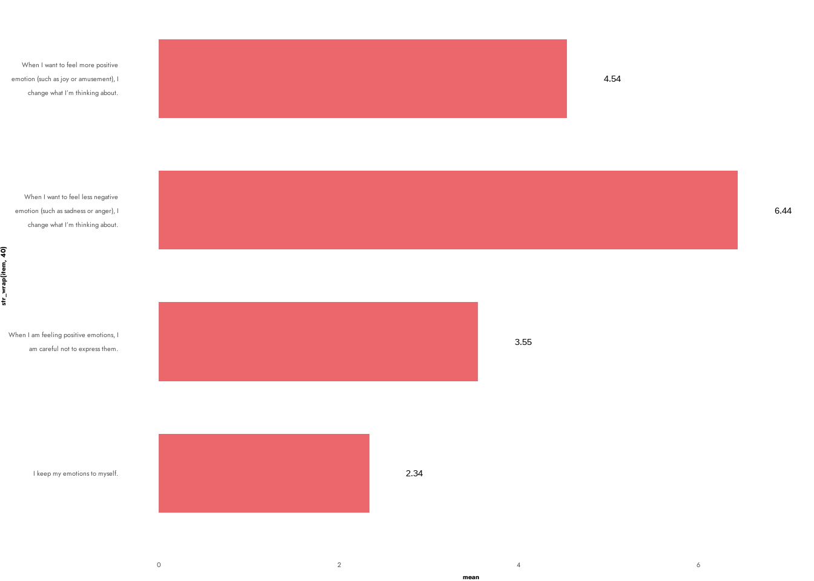
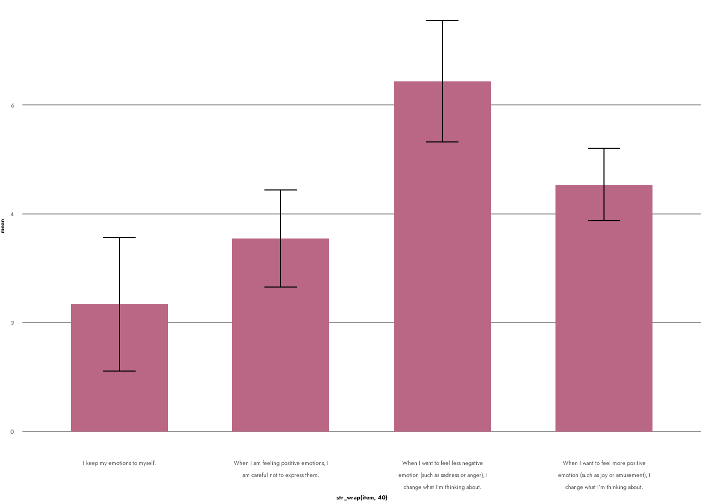

This part discusses specific types of charts, when to use them and some tweaks to make them work.
Center for Research on Prejudice reports can contain various types of plots but there are some common ones that appear more often then others and also have some specific issues related to them. This section provides some suggestions on how to build specific types of charts and how to address the issues that arise with each of those types.
library(tidyverse)
── Attaching core tidyverse packages ──────────────────────── tidyverse 2.0.0 ──
✔ dplyr 1.1.4 ✔ readr 2.1.5
✔ forcats 1.0.0 ✔ stringr 1.5.1
✔ ggplot2 3.5.1 ✔ tibble 3.2.1
✔ lubridate 1.9.4 ✔ tidyr 1.3.1
✔ purrr 1.0.4
── Conflicts ────────────────────────────────────────── tidyverse_conflicts() ──
✖ dplyr::filter() masks stats::filter()
✖ dplyr::lag() masks stats::lag()
ℹ Use the conflicted package (<http://conflicted.r-lib.org/>) to force all conflicts to become errors
A few more specific issues that often arise for bar plots:
position adjustments
Bar plot work best with position dodge. The only thing to remember is to set the width right and add the position adjustment to any additional geoms used in the plot.
Sometimes we might be working with very long labels for some categories. Those can be difficult to nicely render on a bar plot. 2 ways to deal with this is either to flip coordinates that often makes the labels more readable or to wrap them so that they will have fixed maximum length on a single line. In case of flipping coordinates you will need to adjust the grid lines as well
Option 1:
df_long_labs <-data.frame(item =c("When I want to feel more positive emotion (such as joy or amusement), I change what I’m thinking about.","I keep my emotions to myself.","When I want to feel less negative emotion (such as sadness or anger), I change what I’m thinking about.","When I am feeling positive emotions, I am careful not to express them."),mean =c(4.54, 2.34, 6.44, 3.55),sd =c(0.67, 1.23, 1.12, 0.89))df_long_labs %>%ggplot(aes(x = item, y = mean)) +geom_col(fill = cbu_cat_2[2], width = .6) +geom_text(aes(label = mean), nudge_y = .5) +coord_flip() +theme_cbu() +theme(panel.grid.major.y =element_blank(),panel.grid.major.x =element_line(color ="grey80", linewidth = .5))
Option 2:
df_long_labs <-data.frame(item =c("When I want to feel more positive emotion (such as joy or amusement), I change what I’m thinking about.","I keep my emotions to myself.","When I want to feel less negative emotion (such as sadness or anger), I change what I’m thinking about.","When I am feeling positive emotions, I am careful not to express them."),mean =c(4.54, 2.34, 6.44, 3.55),sd =c(0.67, 1.23, 1.12, 0.89))df_long_labs %>%ggplot(aes(x =str_wrap(item, 40), y = mean)) +geom_col(fill = cbu_cat_2[2], width = .6) +geom_text(aes(label = mean), nudge_y = .5) +coord_flip() +theme_cbu() +theme(panel.grid.major.y =element_blank(),panel.grid.major.x =element_line(color ="grey80", linewidth = .5))

adding errorbars:
df_long_labs %>%ggplot(aes(x = item, y = mean)) +geom_col(fill = cbu_cat_2[2], width = .6) +geom_errorbar(aes(x =str_wrap(item, 40), ymin = mean - sd, ymax = mean + sd), width = .2) +theme_cbu()

some likert-scale related issues:
geom_bar() will always by default start the plots from 0. This is generally good behavior but in case of likert scale items we often want them to start from 1. The best way to adjsut this is via coord_cartesian() and setting the ylim argument.
We use those usually for displaying percentages (e.g. distribution of answers to a likert scale type question). Specific issues that often arise with these kinds of plots are related to very small categories. When trying to show text for those categories it can be difficult to get non-overlappling and readable labels. Some ways to deal with this is to collapse categories if possible or use {ggrepel} to push text.
Line charts are usually best suited for showing changes in time. One thing that sometimes comes up is a large number of lines that an make the plot unreadable. If possible we can then try to highlight just one (or a few) category and keep the rest in grey.
df_lines <- data.frame(
date = rep(c(2012,2013,2014,2015, 2016), 5),
category = sort(rep(letters[1:5],5)),
value = rnorm(25)
)
df_lines %>%
ggplot(aes(x=date, y = value, color = category)) +
geom_line(linewidth = 1.4) +
scale_color_manual(values = cbu_cat_2) +
theme_cbu()
5.0.4 Scatterplots
Use cases are pretty obvious. The thing to remember is to deal with overlapping points either by setting transparency, using geom_count() or adding jitter.
remember about reference line - geom_point will happily start the y axis from a number different from 0 or 1
5.0.5 Line-of-best-fit charts
This in general refers to plots that show some kind of regression-like line of best fit, be it from a GLM, LOESS, GAM etc. Three things to remember about with these kinds of plots is to work with the model itself when plotting (rather than raw data), make sure a proper interpretation is provided and try to include uncertainty.
Quite commonly cbu reports graphically display correlations. One way which was commonly used was to make bar plots with heights of bar representing strength of the correlation. Some alternatives include dumbbell charts that use points instead of bars
One additional type of charts that sometimes appears in the reports are path diagrams showing path/SEM models. Unfortunately there isn’t really any good package for displaying path diagrams. IF you really want to make it in R you can use {ggdag} but all the nodes, positions and text has to be coded manually.
You can make such diagrams in Figma, diagram.net or Power Point. If you do that remember to use Open Sans font, preferrably size 12 or 14.